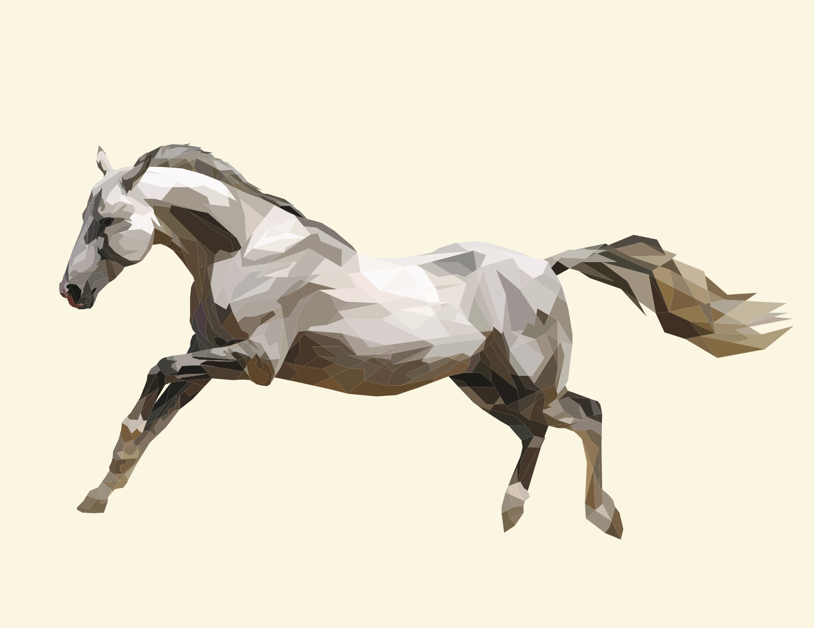
The Adobe Illustrator software was used to create a realistic geometric art of horse in galloping movement. "The Wind" was submitted to Rochester Institute of Technology/National Technical Institute for the Deaf's annual Digital Arts, Film and Animation competition for the graphic media category, and was selected as a winner for 2016-2017.
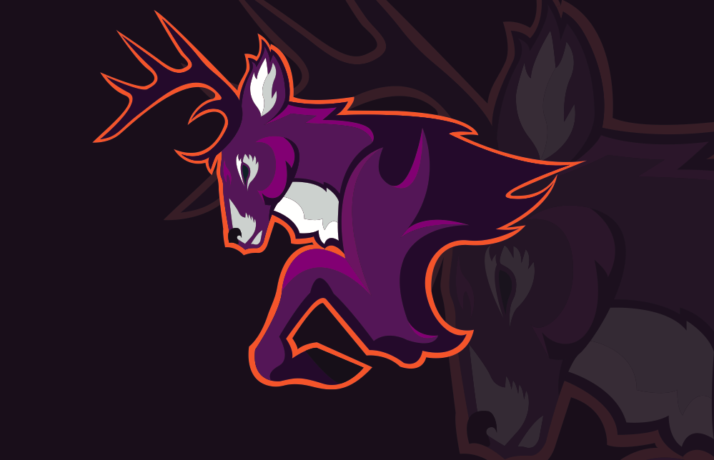
The stag logo was created on Adobe Illustrator for one of the assignments for a graphics design course where students were required to come up with a sports logo on their own.
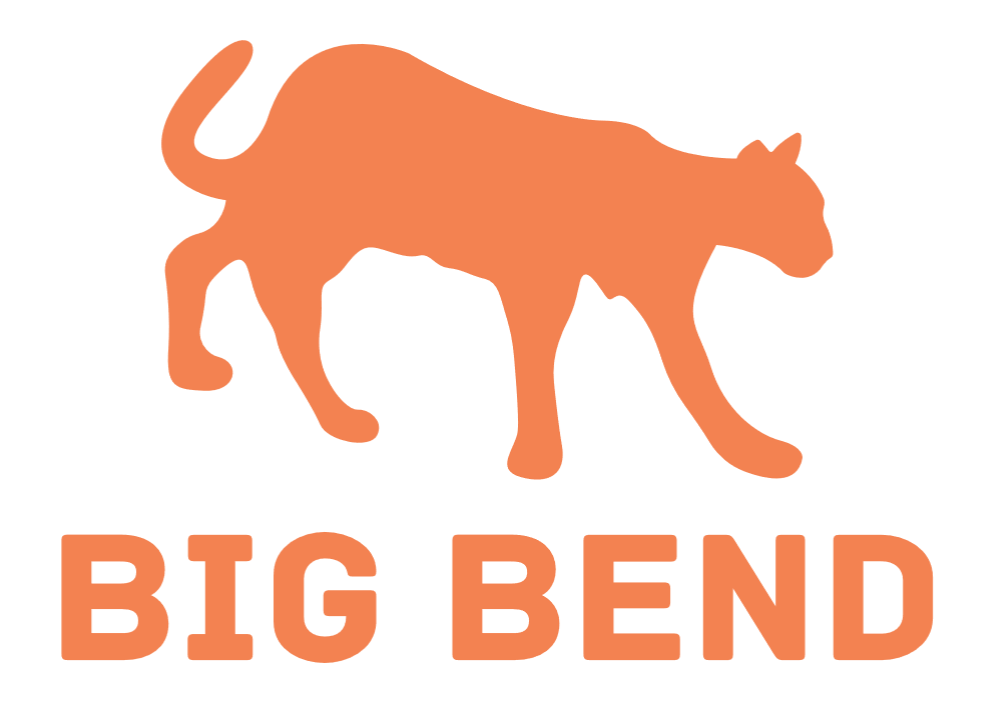
The Big Bend National Park logo was developed, as part of a logo project for the New Media Design Digital Survey class at the Rochester Institute for Technology. The mountain cats are very common at the national park, thus the reason why a mountain cat was used as a main theme for the logo design. However, the three major mountains (Mt. Emory and the Mule Ears) outline was incorporated into the mountain cat's legs.
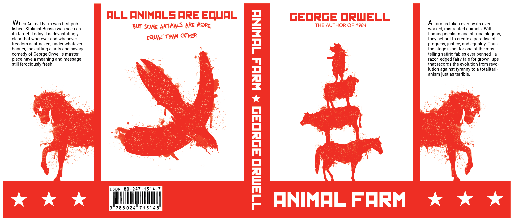
Animal Farm, written by George Orwell, is a satire of the Soviet Communism. When given the challenge of designing a book cover for the New Media Design Digital Survey class, it was natural to create a book cover that parallels the anti-communist propaganda that was frequently used throughout the history. Adobe Illustrator and Photoshop were used for this design.
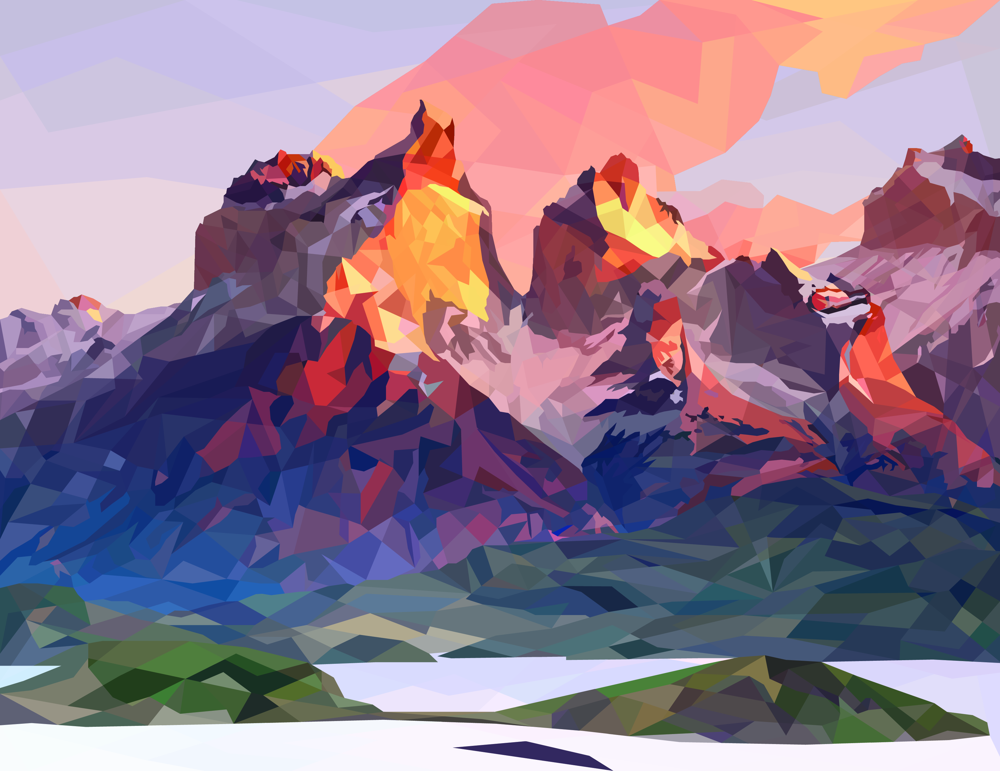
Twilight Peaks was created while taking a dual credit class at Austin Community College as a part-time student. Like "The Wind", a similar approach was used to create this digital art by using Illustrator and Geometric to create an image of mountains. Twilight Peaks was selected by the faculty to be shown at the Dougherty Arts Center as part of Austin Community College's annual arts show.
 The art was one of double exposure projects, part of the Austin Community College's Digital Arts class. Adobe Photoshop was used to create the art.
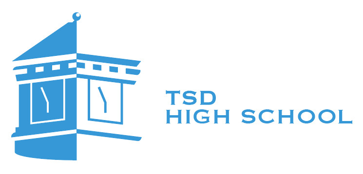
Texas School for the Deaf's High School logo was designed with the intention of being used for their polo shirts (for teachers and administrators). Negative space approach was used, with only one color to keep the embroidery and printing costs low. A hidden message was also incorporated with the design, as the clock hands state 18:56 in the military time, which reflects Texas School for the Deaf's founding year, 1856.
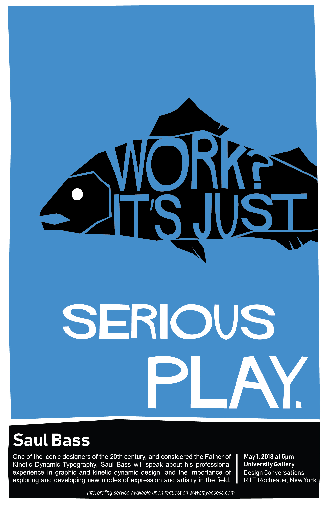
Saul Bass is one of the most well-known designers especially his kinetic dynamic typography approach. The poster was based on his design style and part of a project for New Media Design Digital Survey class.
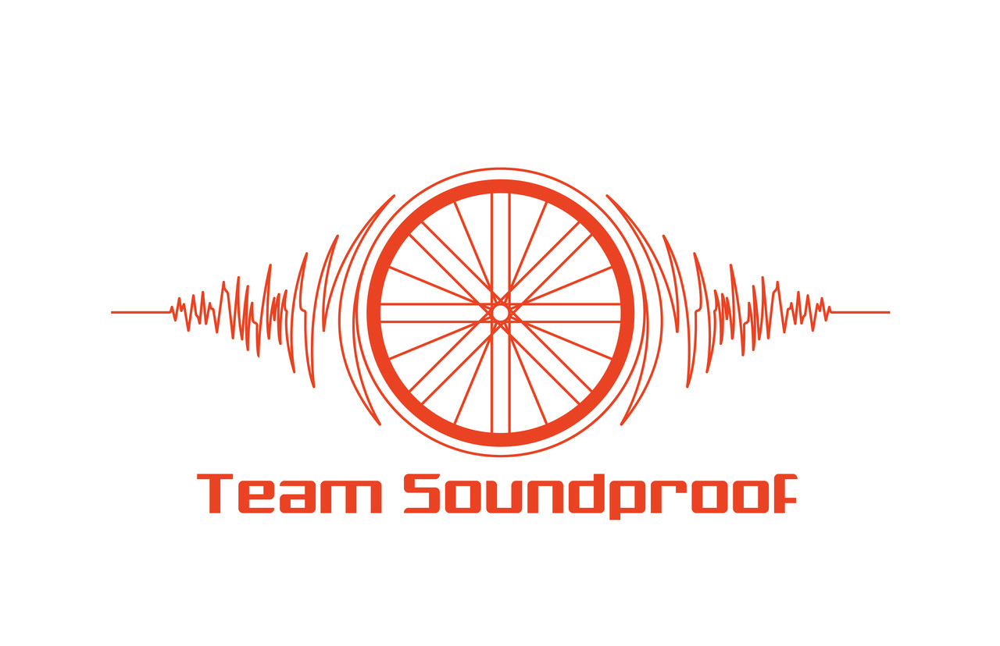
A local cycling club asked me to develop several different possible logos for their club, Team Soundproof. They selected this logo, and they are currently using this logo on their cycling kits and webpage. Adobe Illustrator was used for this design.
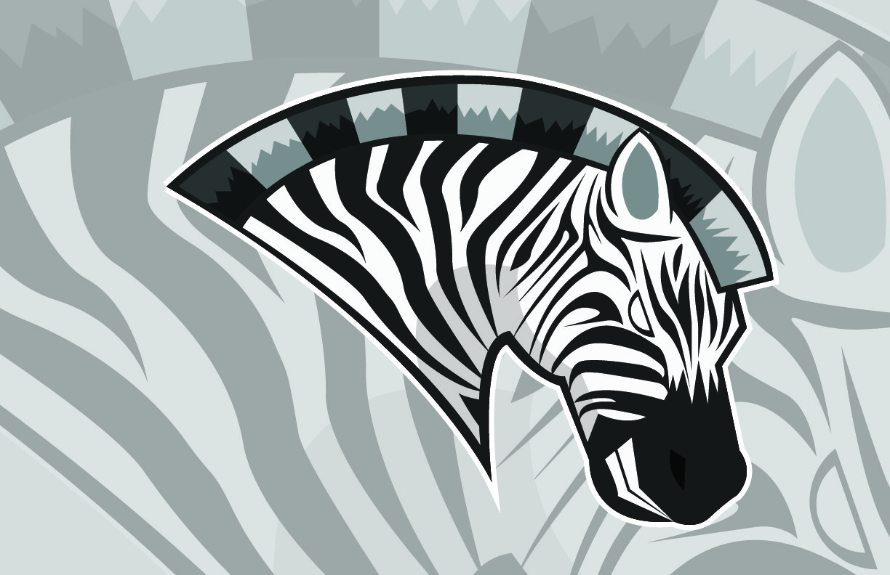
After the sport logo assignment in the graphic design course. I wanted to try something new and do another one. So, Zebra was chosen. The method of creating this logo is similar as the stag logo.
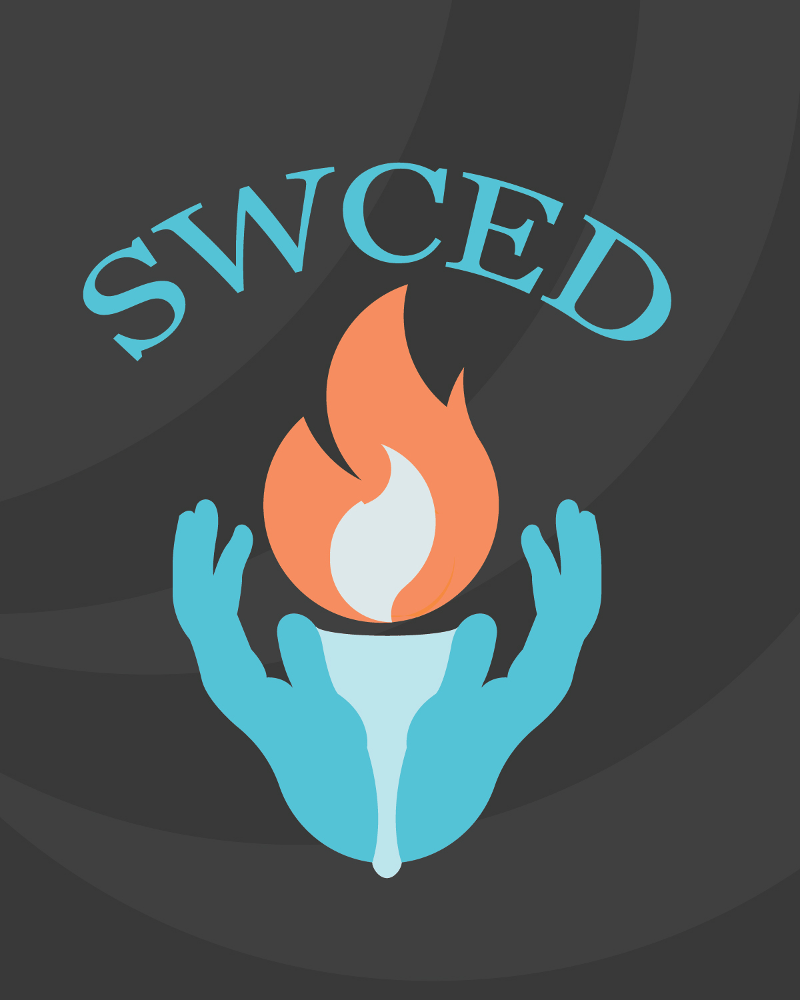
The Statewide Conference of Education of the Deaf (SWCED) sent out an announcement about a logo contest for its biannual conference. They had a specific theme for 2016 and requested that the logo reflect the theme "Igniting the Flame Within: The Pursuit of Student Success". The logo has a negative space between the hands, which shows the outline of a torch. This image was selected for the conference in 2016.
The art was one of double exposure projects, part of the Austin Community College's Digital Arts class. Adobe Photoshop was used to create the art.
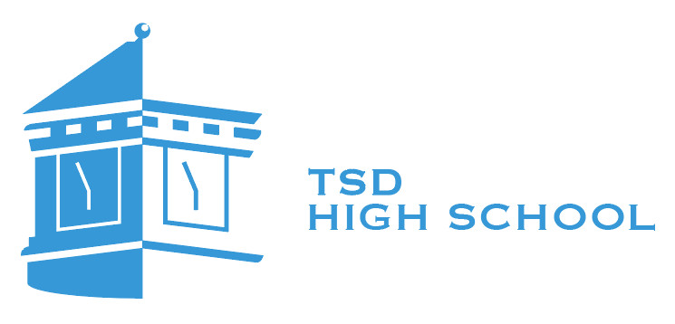
Texas School for the Deaf's High School logo was designed with the intention of being used for their polo shirts (for teachers and administrators). Negative space approach was used, with only one color to keep the embroidery and printing costs low. A hidden message was also incorporated with the design, as the clock hands state 18:56 in the military time, which reflects Texas School for the Deaf's founding year, 1856.
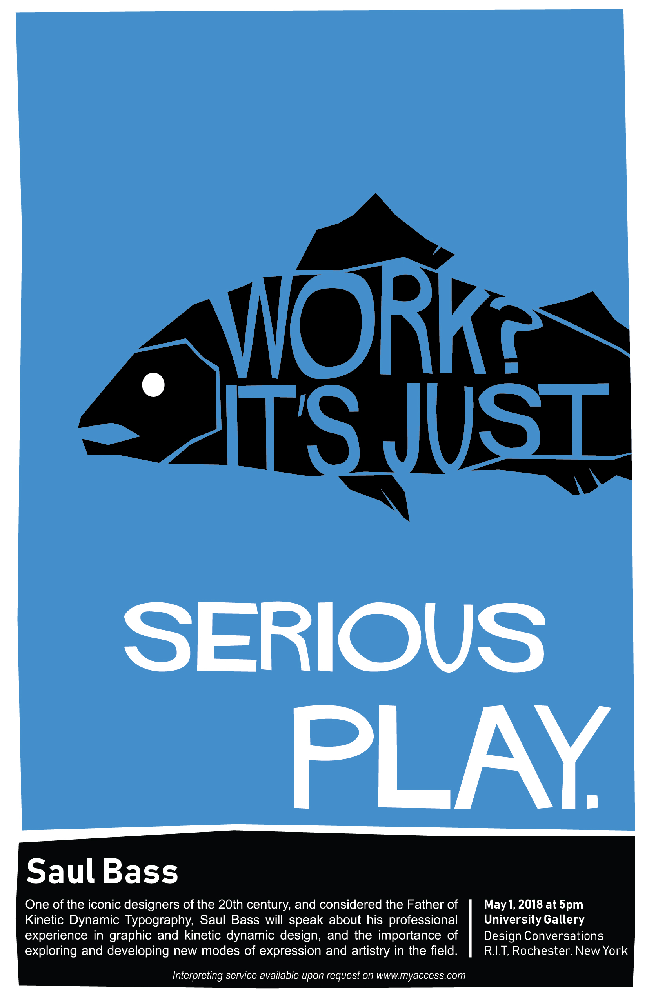
Saul Bass is one of the most well-known designers especially his kinetic dynamic typography approach. The poster was based on his design style and part of a project for New Media Design Digital Survey class.
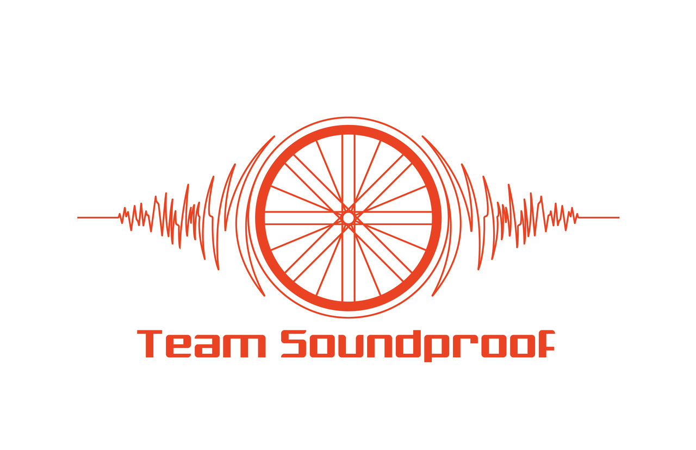
A local cycling club asked me to develop several different possible logos for their club, Team Soundproof. They selected this logo, and they are currently using this logo on their cycling kits and webpage. Adobe Illustrator was used for this design.
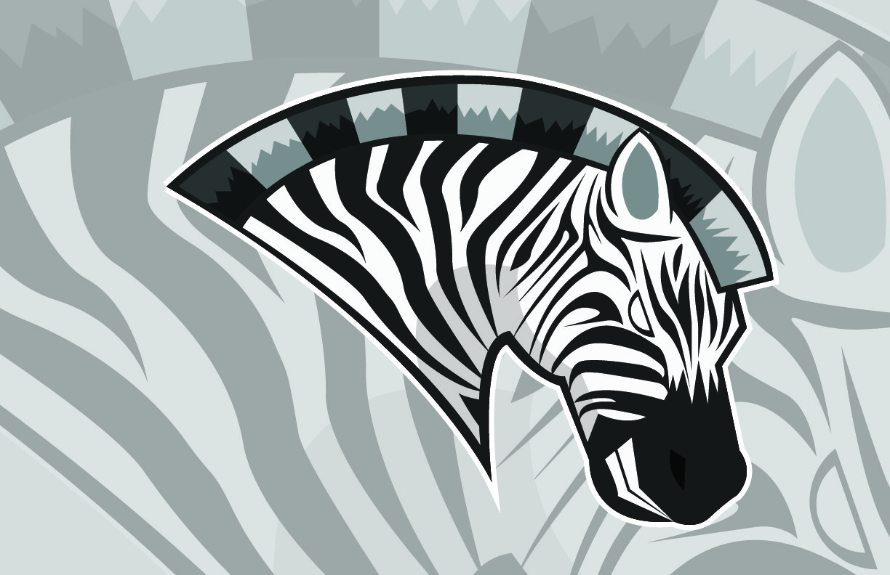
After the sport logo assignment in the graphic design course. I wanted to try something new and do another one. So, Zebra was chosen. The method of creating this logo is similar as the stag logo.
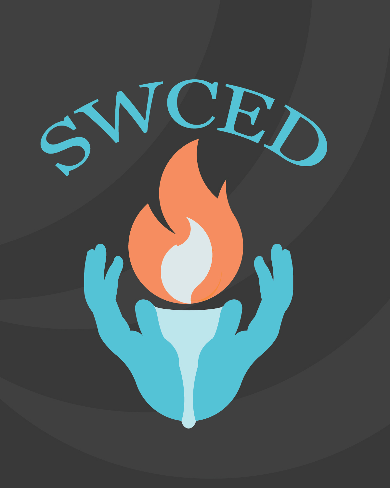
The Statewide Conference of Education of the Deaf (SWCED) sent out an announcement about a logo contest for its biannual conference. They had a specific theme for 2016 and requested that the logo reflect the theme "Igniting the Flame Within: The Pursuit of Student Success". The logo has a negative space between the hands, which shows the outline of a torch. This image was selected for the conference in 2016.